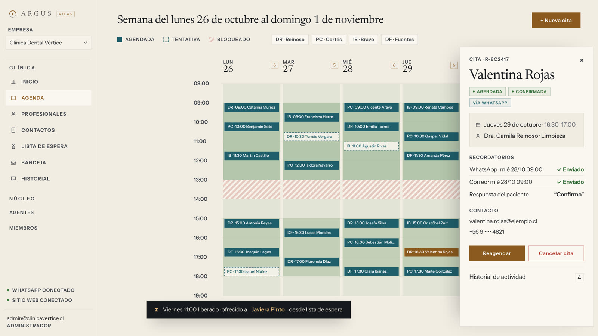
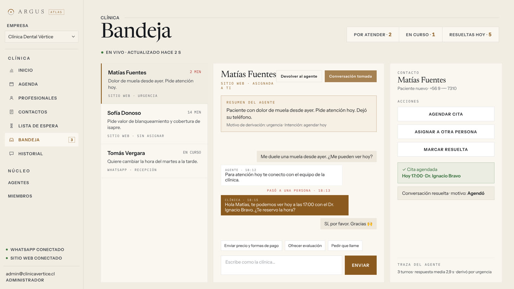
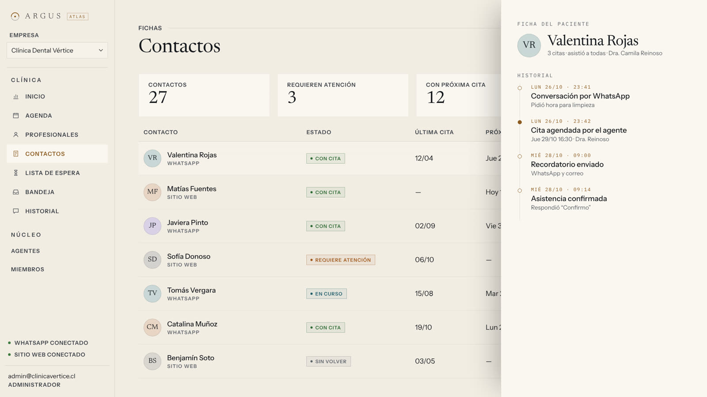
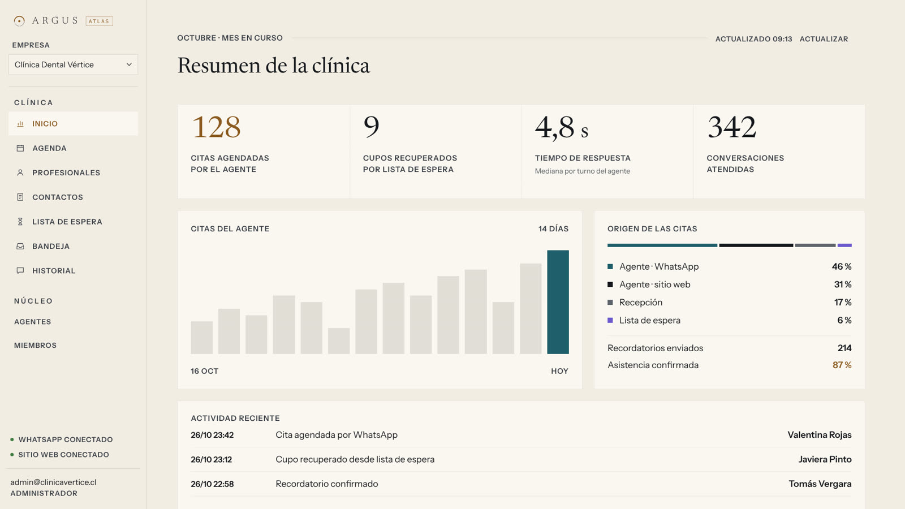

Responde y agenda
Por WhatsApp y en su sitio web, con la información de su centro. Ofrece horarios disponibles y deja la cita en la agenda del profesional que corresponde.
ATLAS responde con la información de su centro, agenda por profesional, envía recordatorios y ofrece las horas canceladas a su lista de espera. Su equipo atiende solo lo que necesita una persona.
Videollamada breve por WhatsApp · La demo usa datos ficticios, sin registro.
Hola, ¿tienen hora para limpieza esta semana?
Agente ATLASHola Valentina. Tengo el jueves 29 a las 10:00 o 16:30 con la Dra. Reinoso. ¿Cuál le acomoda?
16:30, por favor
Agente ATLASListo. Quedó agendada el jueves 29 a las 16:30. Le enviaré un recordatorio el día anterior.
Un recorrido de 70 segundos por una clínica de ejemplo: una conversación por WhatsApp a las 23:41 que termina en una cita, la agenda, la bandeja y la ficha del paciente.




Panel ATLAS con datos ficticios de una clínica de ejemplo.
Por WhatsApp y en su sitio web, con la información de su centro. Ofrece horarios disponibles y deja la cita en la agenda del profesional que corresponde.
Envía recordatorios por WhatsApp o correo. Si alguien cancela, ofrece la hora a su lista de espera y registra quién la tomó.
La recuperación depende de la aceptación del paciente.Urgencias, valores no configurados o casos especiales llegan a la bandeja con un resumen. Su equipo responde desde el mismo chat.
Fuera del horario de su equipo, la conversación queda pendiente.Agenda por profesional, fichas de contacto con su historial, lista de espera, reportes y el registro de cada conversación.
Todos los planes tienen las mismas funciones. Cambia la cantidad de respuestas del agente al mes. La primera mensualidad se cobra después de la entrega.
$159.000 + IVA / mes
2.000 respuestas del agente al mes
Implementación $300.000 + IVA
$429.000 + IVA / mes
7.000 respuestas del agente al mes
Implementación $650.000 + IVA
$1.090.000 + IVA / mes
19.000 respuestas del agente al mes
Implementación desde $1.200.000 + IVA
Incluido en todos: agendamiento y cambios de citas · lista de espera y recordatorios · panel, bandeja y reportes · WhatsApp dentro del tramo.
Ver condiciones completasEstamos abriendo las primeras implementaciones. Por eso las acompañamos directamente los socios fundadores, desde la configuración hasta las primeras semanas de operación.
Pasa la conversación a la bandeja con un resumen y el motivo. Una persona de su equipo la toma y responde desde el mismo chat. Fuera del horario de su equipo, queda pendiente.
El agente responde y agenda a toda hora. La atención de personas sigue el horario de su centro: ATLAS no promete respuesta humana inmediata fuera de ese horario.
ATLAS trabaja con su propio calendario y panel. No ofrecemos integraciones estándar con otras agendas; en la reunión revisamos cómo hacer la transición en su caso.
Desde $159.000 + IVA al mes con 2.000 respuestas del agente y WhatsApp incluido. La implementación se cobra aparte, desde $300.000 + IVA: 50% al contratar y 50% contra entrega. La primera mensualidad se cobra después de la entrega. Ver planes.
El plazo estimado es de dos semanas desde que contamos con la información y los accesos completos. Conozca el proceso.
El tratamiento de datos se rige por la política de privacidad y por el contrato de servicio. La demo usa solo datos ficticios y en la primera conversación no necesitamos información de pacientes.
Una reunión breve para entender cómo atienden hoy y mostrarle ATLAS con un caso parecido al suyo.
Conversamos sobre su agenda, sus canales y su equipo.
Revisamos con usted qué debe responder el agente y qué pasa a una persona.
Plan, plazos de implementación y valor, para evaluar sin compromiso.
Para la primera conversación basta con su nombre, empresa y necesidad. No envíe información de pacientes.